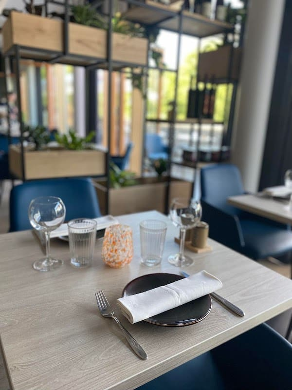
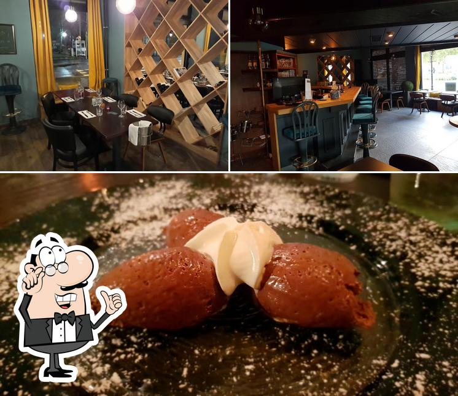

Une table chef-driven où tout est cuisiné sur place, une cave de vins naturels et une épicerie à emporter — réunies sous un même toit lumineux, face à la piscine des Terres Rouges.

Cuisine bistronomique, 100 % faite maison, au rythme du marché.
Une carte courte qui tourne toutes les deux à trois semaines, dictée par la saison et les producteurs. Voici quelques signatures régulièrement à l'ardoise.
Vins naturels choisis chez des vignerons indépendants.
Une cave vivante, pensée en accords avec la carte. Menu dégustation possible avec suggestions au verre — nos notes de dégustation, saison après saison.
Sélection indicative — la carte des vins évolue en cave. À confirmer.
« Food, Wine & Shop » — la maison se prolonge à emporter.
Ce qu'on aime en salle se retrouve sur les étagères : la cave se visite, la bouteille se remporte, et quelques produits de saison suivent.
Poussez la porte à l'heure de l'apéritif : on vous conseille une bouteille pour ce soir.
Se renseigner
De Dudelange à la piscine des Terres Rouges de Bettembourg, la même idée : une bistronomie généreuse, sans chichi, ancrée dans le quartier.
La salle est lumineuse — bois clair, chaises bleu marine, étagères végétalisées — pensée pour les déjeuners de semaine comme pour les dîners à deux. Terrasse, menu enfant, chiens bienvenus, parking gratuit et accès de plain-pied.
Une adresse de food-forward regulars et d'amateurs de vins nature, régulièrement en tête des tables de Bettembourg.
| Lundi | Fermé |
| Mardi | 12:00–15:00 à confirmer |
| Mer–Sam | 12:00–15:00 · 18:00–23:00 à confirmer |
| Dimanche | 12:00–15:00 à confirmer |